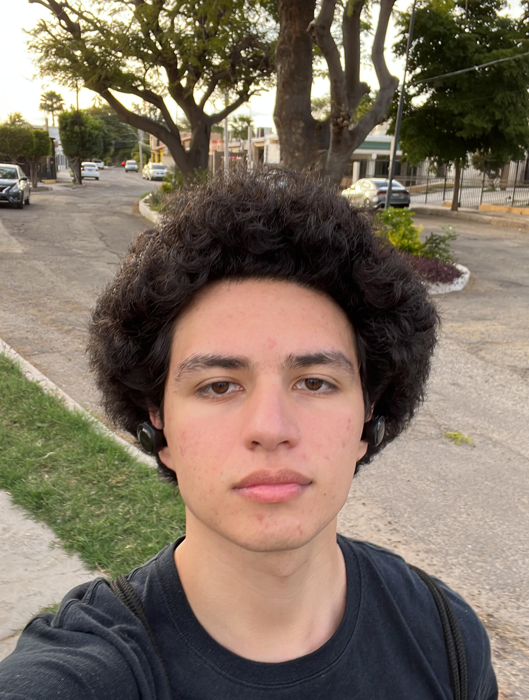

Elzar Miguel Machado Fabila
Ingeniera en Sistemas Computacionales y Licenciatura en Negocios y Comercio Internacional

Acerca de mi:
Soy Elzar Machado tengo 22 años, actualmente soy estudiante cursando dos carreras: Ingenieria en Sistemas Computacionales en la Universidad Kino y Negocios y Comercio Internacional en Unison.
Tengo diversos pasatiempos como son el hacer deporte especialmente el futbol y el gimnasio.
Mi meta es poder desarrollar mi propio emprendimiento poniendo en practica mis conocimientos tanto tecnologicos como en el ambito de los negocios en un futuro.
Soy una persona muy activa y competitiva que le gusta aprender y obtener nuevas experiencias de vida.
Idiomas
- Español
- Ingles
- Bases de Aleman